A tymczasem w Cameracie...
.
2012-05-20
Spotykamy się już o 14.30 w strojach roboczych, bo trzeba wszystko przygotować do koncertu. Wszyscy pracują, ustawiają, stroją, przesłuchują i świetnie się przy tym bawią, bo nastroje mamy radosne, jak zawsze.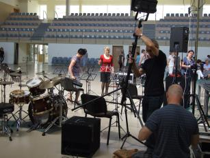 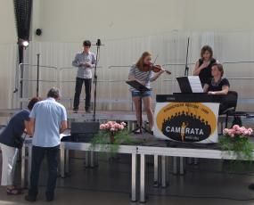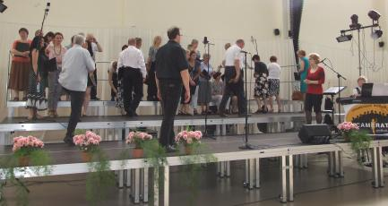
Chwila odpoczynku, ale dobry humor nas nie opuszcza. Zaraz trzeba iść się przebrać.
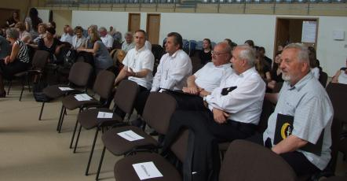 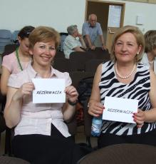
A tak będziemy wyglądać na koncercie . . . ładnie???
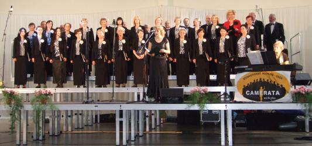
Godzina 18.00 – ZACZYNAMY . . .Przypomnijmy, iż Camerata świętowała swój jubileusz w styczniu w Komorze Warszawa wielickiej Kopalni Soli z udziałem m.in. przedstawicieli władz samorządowych, natomiast niedzielny koncert zaszczycił swoją obecnością Marek Sowa, Marszałek Województwa Małopolskiego, który przekazał Stowarzyszeniu Muzycznemu Chór Camerata z Wieliczki na ręce Prezesa Elżbiety Achinger medal Polonia Minor w podziękowaniu za pracę na rzecz Małopolski i jej mieszkańców oraz wzbogacanie życia kulturalnego regionu.
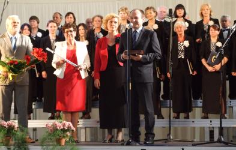 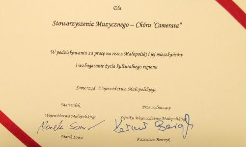 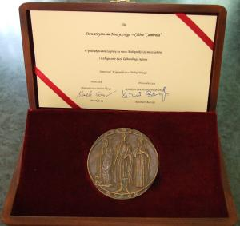
W programie koncertu znalazły się najpiękniejsze arie i chóry z oper S. Moniuszki, G. Verdiego, R. Wagnera oraz musicali A.L.Webbera, L. Bernsteina i J.Bocka, a także wirtuozowskie utwory skrzypcowe P. Sarasate'go i V. Monti'ego. Gościnnie wystąpili: Konrad Szota - baryton, solista Opery Krakowskiej,
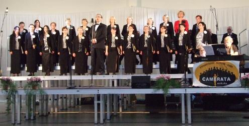
skrzypaczki Anna Buda i Aleksandra Szota,
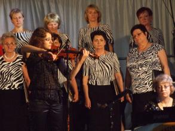 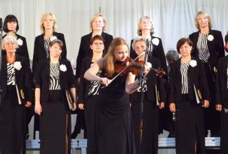
pianistki Agnieszka Korczyńska i Małgorzata Westrych,
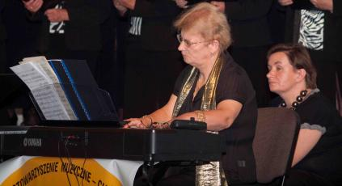 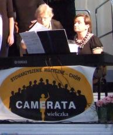
tancerze Magdalena Trąbka i Rafał Ślęczka (mazur) oraz Wanesa Zych i Łukasz Szustak (cha-cha),
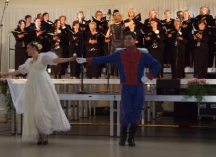 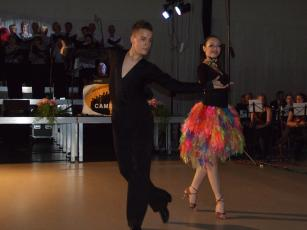
a także Chór Szkoły Muzycznej I stopnia w Wieliczce pod dyr. Izabeli Szoty,
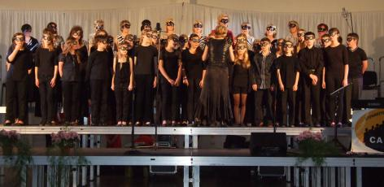
Big-Band "Wieliczka" pod dyr. Pawła Gajewskiego
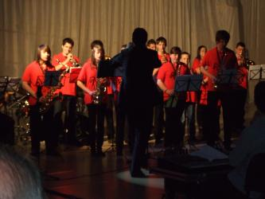
oraz orkiestra, której trzon stanowił zespół Blue Brass Band kierowany przez Ignacego Stojka.
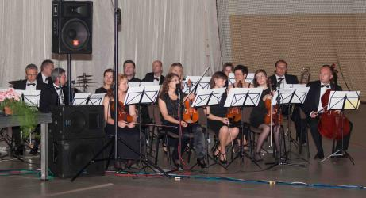
Na zakończenie koncertu zaśpiewaliśmy PIOSENKĘ CAMERATY razem ze wszystkimi gośćmi, przy akompaniamencie naszej chórzystki Ewy Roeske-Tracz.
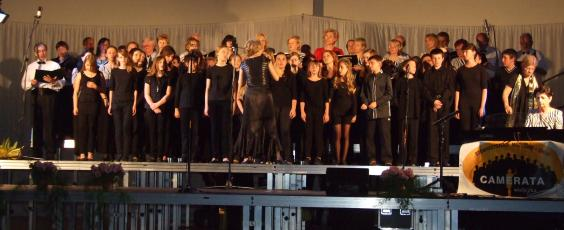
Dostaliśmy brawa na stojąco a na zakończenie widownia zaśpiewała nam 100 lat. To chyba mówi samo za siebie jaki był koncert.
Tak nas opisuje i pokazuje „Życie Wieliczki i Powiatu” zbacz zdjecia

© Stowarzyszenie Muzyczne Chór Camerata Wieliczka